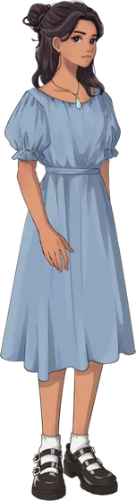
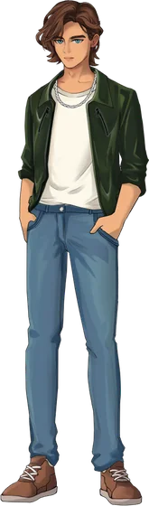
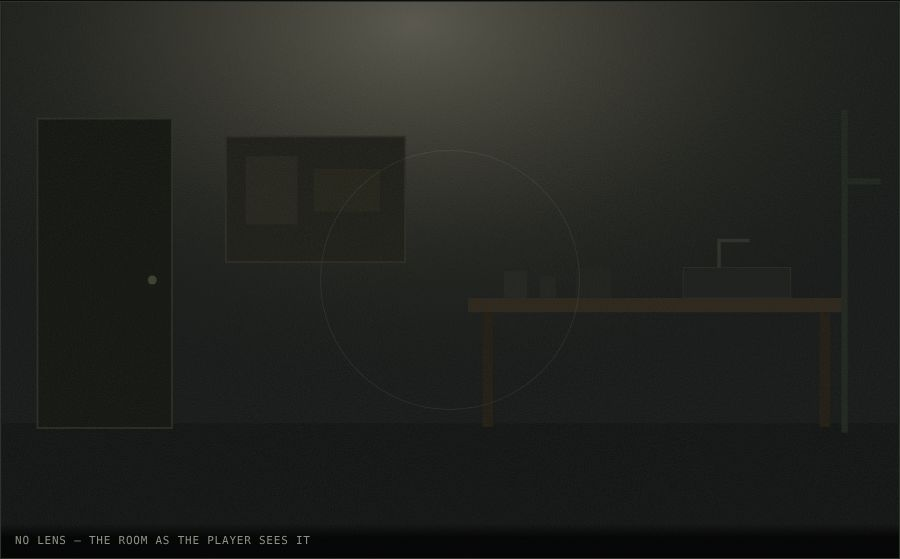
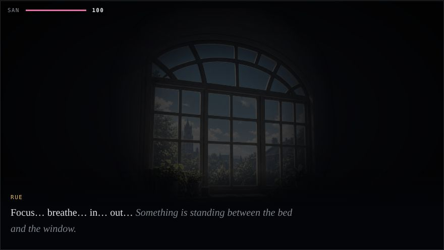
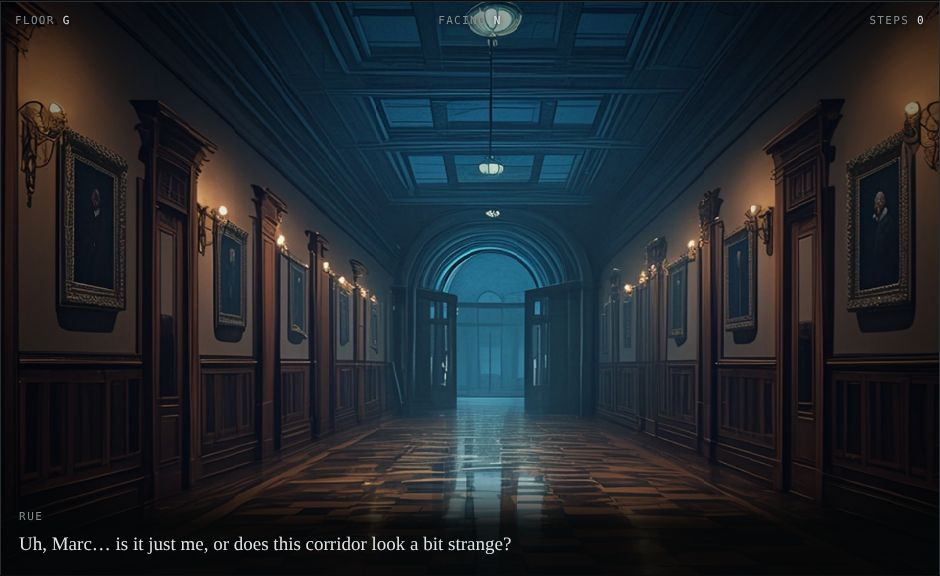
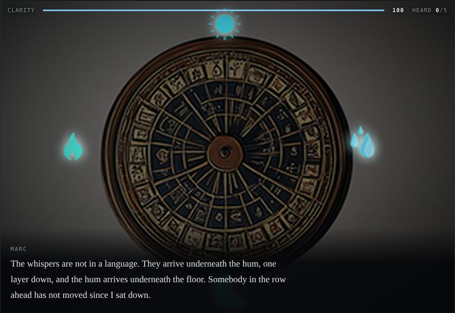
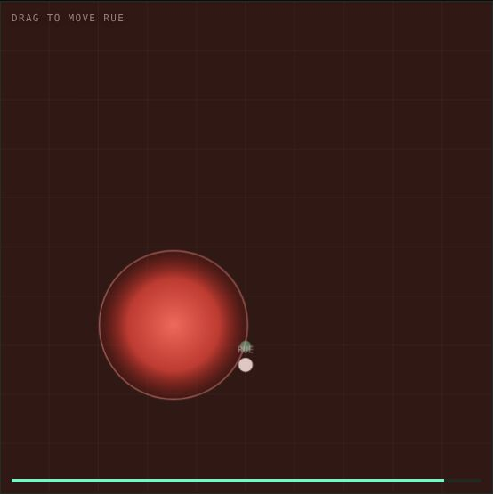

Original IP · narrative · characters · puzzles

Rue
MarcFour students investigate an illness that leaves its victims brilliant and empty — and find that the professor spreading it believes he is ending human suffering.
A mystery-horror campus and a cast of four, developed as an IP rather than a single title. An escape-room puzzle game has already been produced in this world; the investigation side is in development.

Core system · perception gating
Each character’s gift reveals a different layer of the same scene. The light is deliberately small, because a gift lets you search a room rather than handing it to you — and none of them can close a case alone.
The skill check sets the radius. A bare success is a coin of light; a hard success floods the room.
Play Four Lenses [1]
Scene · Rue’s room, 02:40
Horror delivered through the interface rather than the image. Three of the four actions do nothing at all. Mind-reading is a real check, and every outcome ends the scene — what changes is what she carries out of it.
Success: she learns the shape is made of her. A hard success: and that something else was listening.
Play What the Meditation Let In [2]
Scene · the art building
Walk forward and the corridor hinges along twenty creases. The floor counter reads G, then 2, then 4; the compass swings north to south while you walk in a straight line.
Marc’s hard success makes the folds legible and draws the way out.
Play The Folding Corridor [3]
Scene · classroom B-201, −2F
Hold to listen and the text comes apart while a real 56 Hz drone builds underneath. Five buried phrases surface one at a time. Nothing stops you from staying.
No check here. The player sets their own exposure, which makes the loss theirs.
Play Auditory Perception · sound on [4]
Core system · what a check actually buys
A four-dimensional body crosses the room, so its cross-section swells and vanishes. Before the check it feels arbitrary. A success makes the motion legible; the best result finds the one spot in the room it never reaches.
A check never gates progress. It gates legibility — failure costs clarity and time.
Play The Red Ball [5]